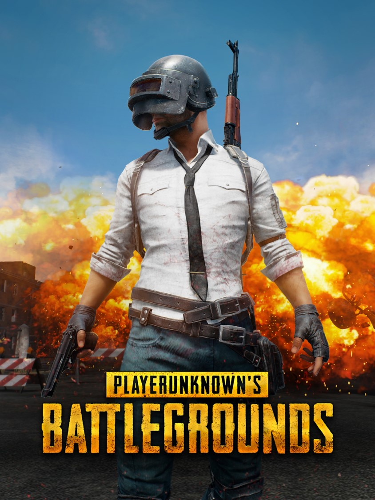
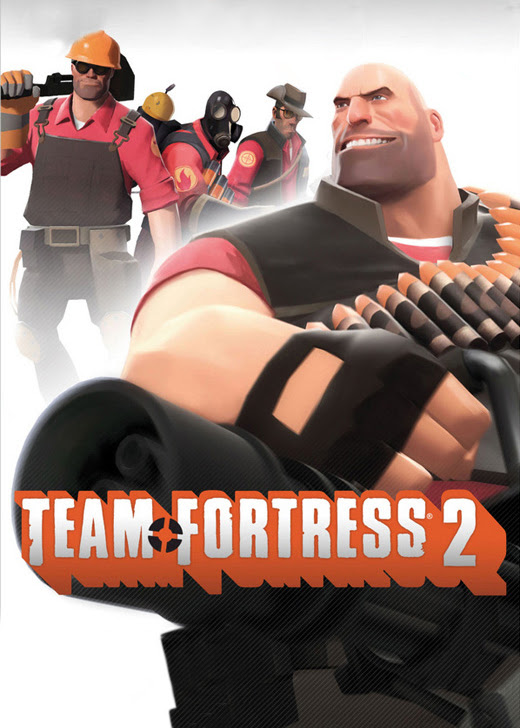

Valorant - это многопользовательский
шутер,
в котором игроков ждут противостояния
команд в формате 5х5 игроков. Геймплей
знаком всем, кто хотя бы раз играл в
Counter-Strike - одна команда пытается заложить бомбу на
определенной точке, вторая пытается
помешать это сделать.
Valorant
Apex Legends — это многопользовательская
онлайн-игра в жанре «королевская битва»,
которая сталкивает на одной карте до 60
игроков, действующих группами по три человека
— всего до двадцати команд. Помимо этого режима есть
битва на Аренах где участвуют на 1
карте до 6 игроков.

Apex Legends
PlayerUnknown's Battlegrounds
(сокр. PUBG, также известна как PUBG: Battlegrounds) —
многопользовательская онлайн-игра в жанре королевской
битвы, разрабатываемая и издаваемая студией PUBG Corporation,
дочерней компанией корейского издателя Bluehole.

Pubg
Dota 2 — компьютерная
многопользовательская
командная игра жанра
стратегия в реальном времени с
элементами компьютерной ролевой
игры.
В игре участвуют две команды по пять человек.
Одна команда играет за светлую
сторону, другая — за темную.

Dota 2
Warface — это бесплатный многопользовательский
онлайн-шутер, разработанный всемирно известной
компанией Crytek. Игрокам предстоит вести сражения
в различных уголках земного шара, начиная с крупных городов
и заканчивая маленькими, но неизменно опасными
деревушками.
Warface
Counter-Strike: Global Offensive — многопользовательская
компьютерная игра. Игроки делятся на две
команды: террористов
и подразделений специального назначения, после чего
сражаются друг с другом несколько раундов.
Cs:go
Team Fortress 2 — многопользовательская командная игра в
жанре аркада, разработанная компанией Valve Corporation
и выпущенная в 2007 году.
С 24 июня 2011 года игра распространяется бесплатно через Steam.

Team Fortress 2
Destiny 2 — компьютерная игра в жанре
шутера от первого лица с элементами MMORPG,
разработанная американской компанией Bungie. Игра,
выпущенная в 2017 году для PlayStation 4, Xbox One и Microsoft Windows.

Destiny 2